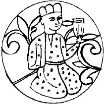

Tankut Argun 3 Ocak 2004 Cumartesi gününün pek erken bastıran o soğuk akşamında ellerinde bir demet çiçek, en güzellerinden üç dört şişe kırmızı şarap, minik bir torba fındık fıstık, sırt çantasının içinde ise, kökü topraklı, jelatine sarılmış küçük bir şeflera ile birtakım minyatür bahçıvanlık ve el aletleri olduğu halde Sanayi Mahallesi’nin eğri büğrü sokaklarında Çiçek’in evini arıyordu. Bayram’ın “beraber gidelim” teklifini kabul etmemiş, evi iyice tarif ettirdikten sonra, arabasını da almamış, bir taksiye atlayarak yola çıkmıştı. Epey bir dolaştıktan sonra 50. Yıl İlköğretim Okulu yakınlarında bir sokakta buldu Çiçek’in evini.
Zili çalıp kapının önünde beklerken, içindeki eşitlikçi delikanlı toplumumuzdaki mevcut eşitsizliklere isyan ediyordu. Kendilerinin görkemli, bir hastane kadar, hatta bazı hastanelerden daha temiz, mavi, serin gökdelenlerinden ancak bir taş atımı yerde bu sefalet de neyin nesi oluyordu? Herhalde yakınlarda bir yerde açık bir kanalizasyon vardı. Yoksa belediye gizli gizli sokak köpeklerini öldürüp bu sokağa mı atıyordu? Her ikisi de olabilirdi tabii, içinde ölü köpekler yüzen büyük bir kanalizasyon çukuru tahayyül etti. Etrafına baktı, bir şey göremedi. Biraz sonra kapı açılınca Tankut’un içindeki eşitlikçi delikanlı, dışındaki besili kerata ile anında bir stratejik ittifak yaptı. Beraberce oradan tüymek istediler. Ama çok geçti. Çiçek, “Tankut’um, bana döneceğini biliyordum” çıtlığı ile boyunlarına atılınca kuzu kuzu içeri girdiler.
Bayram’ın “Yok böyle bir ev, yok böyle bir ev!” diye söylenip durduğunu on ile çarpınca evin durumu belki biraz kaleme gelebilirdi. Tankut Beyler, İblis’in bir gün önceki yanık sülfür kokusunu derin bir temizlik nostaljisi ile aradılar ama heyhat! İşte buradaydılar. Bir mezbele turpu kıvamında olan kız adeta bir kubur kelebeği gibi Tankut’un etrafında dönüyor, yıllardır biriktirdiği Tankut hatıralarını ona gösteriyordu:
“Bak Tankut’um bu seninle son yediğimiz yemekten kalanlar.”
Tankut, bir tabağın içinde mumyalaşıp kararmış pirzola parçalarına hayretle bakıyor,
“İyi ama ben bu eve daha önce hiç gelmedim ki Çiçek?” diye söyleniyordu.
“Tabii, bu Ali Baba Köftecisi’nde yediğimiz son yemekten kalanlar, işten çıkarıldığım günün –senin de evlendiğin gün demeye dili varmamıştı– akşamında gittim, rica ettim, çok ağladım, verdiler!”
Neyse, geçelim... Hiç olmazsa pirzola fosilleri artık kokmuyordu. Aynı şeyi “Şanizar İşkembecisinde içilen son çorba” için söylemek pek mümkün değildi. Büyücek, emaye bir tencerenin kapağı açılınca kararmış, pelteleşmiş sıvıdan dışarı taşan koku zavallı Tankut’u bayıltayazdı. Bunu nasıl edindiğini Çiçek’e sormadı bile.
Dili çözülen kız, televizyonlarda sürekli gösterilen otuz kırk yıllık yerli filmlerden kaptığı edayla “Yıllarca, yıllarca hep bu anı bekledim. Al artık canımı Allah’ım! Ah ne kadar mutluyum!” dedikçe Tankut Beyler can ü gönülden sessiz aminler çekiyor, bu korkunç gecenin nasıl biteceğini düşünüyorlardı. Tabii düşünmeleri gereken daha önemli bir şey daha vardı: Kırık Hayal Taşı parçası nasıl ele geçecekti? Tankut ufak bir deneme, büyük bir fedakârlık yaptı. Geldiği andan beri burnundan bir an bile çekmediği çiçek demetini göstererek,
“İstersen vazona koyalım şunları, ha ne dersin, bak ne güzeller? Ne yapacaksın o kadidi çıkmış çiçek eskisini?” dedi.
Çiçek’in anında yüzü asıldı:
“Hayır olmaz, vazomda zaten bir çiçek var. Benim güzel, sadık şefleram! Biliyor musun ben ona ‘Şeftan’ diyorum! Beni hiç yalnız bırakmıyor.”
“Şeftan mı? Şeytan mı?”
“Evet, şeflera ile Tankut’tan türettim, Şef-tan! Diğer seçenekleri de denedim, Larakut fena değildi ama kadın adı gibi durdu, beğenmedim. Ne şeytanı canım?”
Bu plan çalışmayınca Tankut sağlığı için daha riskli olan “B planını” devreye sokmaya karar verdi. “Bu anı kutlayalım” diyerek, üzeri katman katman kir bağlamış masanın üstüne, sağdan soldan bulduğu, hepsi Ocak 1998 tarihli sararmış gazetelerin nispeten temiz kalmış ortalarından kopardığı sayfaları yaydı. Getirdiği çerezleri masanın üstüne döktü, cinslerine göre ayırarak minik öbekler yaptı. Şişelerden birini kendisi, birini Çiçek için açtı. Karşılıklı oturdular. “Ölmeyen aşkımıza” diyerek içtiler. İçtiler. Tankut, canına minnet olmasına rağmen az içmeye çalıştı. Üçüncü şişesinin sonunda Çiçek’te en ufak bir sarhoşluk belirtisi yoktu. Kızın başını döndürüp bu sonucu elde etmek için onu dansa kaldırdı. Tankut, Çiçek ve mecburen Şeftan yine o görkemli danslarını yaptılar. Sonra içkiler tükendi, deniz bitti. Yapacak başka hiçbir şey kalmamıştı. Çantasını bir an bile sırtından eksik etmeyen Tankut kızı kucağına aldı. “C Planına” geçti.
Sora sora Bağdat bile bulunurken Çiçek’in yatak odasının lafı mı olur? Kız vazosundan son demlere kadar ayrılmak istemedi. Ama Tankut’un “Çiçek biraz makul ol! Zinciri sağıma soluma dolanıyor, bak zaten ben artık yanındayım, Şeftan da biraz dinlensin, kim bilir nasıl yorulmuştur” yollu yakınma ve manipülasyonlarının sonunda, gerdanında asılı minik bir anahtarla kolundaki bileziğin kilidini çözerek Şeftan’ı azat etti.
Tankut’un dininden dönerek Katolikliğe geçmesine ve ruhban sınıfına katılıp sekse veda etmesine yetecek kadar ateşli saatler geçirdiler. Tankut arada kızın vücudunu çiziyor diye saatini çıkarmak istedi, Çiçek’in yalvarmaları ile geri taktı. Üç saat kadar sonra bitap düşen kız sonunda uyudu.
Tankut, yataktan sıyrıldı. Sırt çantasını ve Şeftan’ı kucaklayarak, çıplaklığına bakmaksızın salona koştu. Kuruyemiş öbeklerini elinin tersi ile süpürerek masanın üstünde yer açtı. Kurumuş şefleraya asılarak çıkardı. Bir tornavida yardımıyla, oldukça dar ağızlı Allah’ın belası sürahinin içinden, kurumuş toprağı çıkarmaya çalıştı. Toprağı yumuşatmak için şarap şişelerinden birinin dibinde kalan bütün sıvıyı sürahiye boca etti. Bir on dakika sonra, çıkan toprağı didik didik ediyor, baktığı kısmını ayrı bir öbek halinde ayırıyordu. Ne kadar zaman geçti, bilemedi. Yoktu, hiçbir şey yoktu. Tam umudunu yitirmek üzereydi ki, Seftan’ın köklerine bakmadığı aklına geldi. Köklerde topaklanmış kuru toprağı avucunun ayası ile ezdi, ezdi ve evet, küçük, lacivert, üçgen taş parçasını buldu. Minik piramidi dikkatle çantasının ön gözünden aldığı cüzdanına yerleştirdi.
Bu sefer korkunç bir hızla toprakları sürahiye doldurdu. Yarısına kadar dolunca çantasından canlı şeflerayı çıkardı. İtina ile sürahiye dikti. Kalan toprağı alabildiği kadar sürahiye doldurdu. Artanını nasıl olsa anlaşılmayacağı düşüncesiyle evin her tarafına dağıttı. Ölü Şeftan’ın kurumuş bedenini çantasına tıktı. Tarım meslek liseli olmak bir kez daha hayatını kurtarmıştı. Gerçi kendisi Argundağ Tarım Meslek Lisesi’nin makine, evet, makine ve elektronik bölümü mezunuydu ama diğer bölümlerden arkadaşlarını izlemek ona yeterli deneyimi kazandırmıştı işte. “Demek ki bakmakla kediler kasap oluyor” diye keyifle gülümsedi. Hem sonra hangi meslek lisesi mezunu mesleğiyle ilgili bir işte çalışıyordu? Sırtında çantası, kolunda yeni, taze, yemyeşil bir Şeftan, tam zamanında, tan yeri ağarırken Âdem baba kılığında Çiçek’in odasına girdi. Usulca kızın yanına uzandı.
Çiçek uyanınca Tankut’unu yanında bulmanın sevinciyle erkeğe sarıldı. Bir saat kadar sonra ayrıldığında bu sefer Tankut’un içinde, kendini hadım ettirerek Arabistan’da bir yerlere iş başvurusu yapma isteği uyanmıştı. Burnunun tıkalı olduğu o yere batasıca yılbaşı partisine lanet ediyordu. Öte yandan da, o geceki yakınlaşma olmasaydı vatana ve Unomastik Holding’e bu derece büyük bir hizmet edebilir miydi, onu düşünüyordu. Gün gelir, erkekliği feda etmek en büyük erkeklik olmaz mıydı?
Düşünceleri, Çiçek’in sevinç çığlıklarıyla bölündü. Kız yeni çiçeğini keşfetmişti. Aşk, ölü bir çiçeğe can verecek güçteydi. Önce çocuklar gibi sevindi, çiçeğini alıp koluna kilitledi, sonra yüzünde bir gölge dolaştı,
“İyi ama Şeftan’ım artık benimle konuşmuyor” dedi. Sonra, daha da olmadık bir şey yaptı:
“Tankut bu ne koku? Teke gibi kokuyorsun! Sen hiç yıkanmaz mısın? Defol yatağımdan pis şey! Erkek işte ne olacak?” dedi...
Tankut, fırsatı ganimet saydı. Yataktan fırladı. Işık hızıyla giyindi. Kızın taksit taksit ayılacağını, evin ve kendi durumunun farkına varacağını, o zaman durumu ona anlatmanın tamamen imkânsız olduğunu biliyordu. “Elveda Çiçek” diyerek kendini sokağa attı. Burnuna çarpan temiz dağ havası ile sendeledi. Yine de, Çiçek’in yıllar süren depresyonundan çıktığını bilmenin verdiği duyguyla içi geldiğinden daha rahat, vicdanı daha huzurlu, mahallenin tertemiz, İsviçrelileri kıskançlık krizine sokacak denli düzenli, bal dök de yala, sokaklarına daldı.